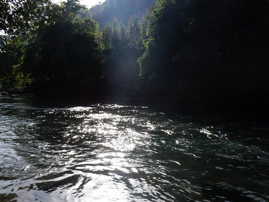
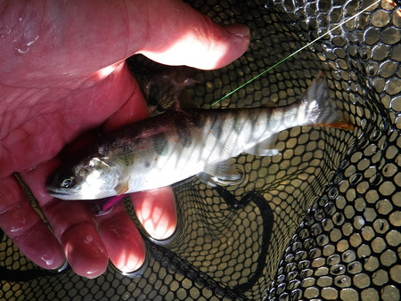
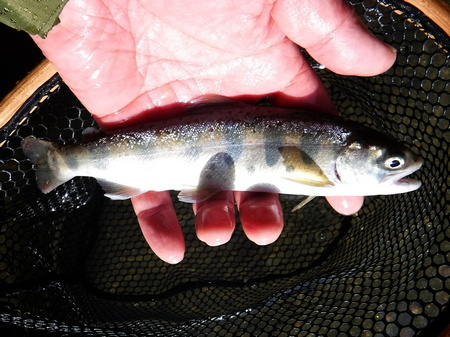
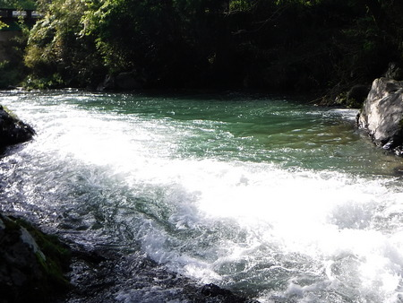
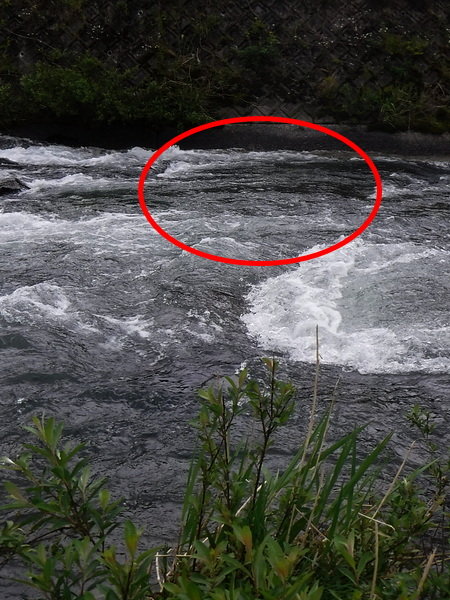
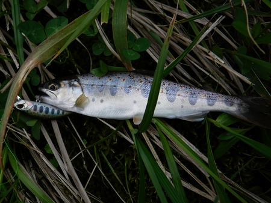

釣行日誌 故郷編
2021/05/01 スーパーカブにて遠征
相棒の叔父が釣りに行けなくなってしまったので、いつもの川まで、往復８時間を独りで運転するには体力的にしんどいことを痛感した。そこで、なんとか自宅からカブで行ける川を探す。
国土地理院のオンラインマップやらグーグルマップで探していると、30年以上も昔、サラリーマン時代に足繁くフライフィッシングに通った川の南側に、見込みのありそうな川があった。距離を測ると、頑張ればカブでも行けそうだった。
木曜日からちょうどよい雨が降って、出水が収まったようだ。こちらは国土交通省のオンライン降雨・水位データにてチェック。
金曜は午後８時に寝て、土曜の丑三つ時、午前２時にむっくりと起き上がる。不細工なサンドイッチを作り、水筒にスポーツドリンクを詰め、釣具と装備をチェックリストに従って荷造りする。
玄関先でヒップウェーダーとウェーディングシューズを履き、大量の荷物を抱えて駐輪場のカブへ向かう。ネオプレンベルトとタイバンドを二重にして、ルアーロッドをフロントフォークに結わえ付ける。着替えはフロントバスケット、デイパックはリアキャリアに載せる。
いざ、出発。人気の無い夜の街をカブでひた走る。パトカーに見つかったら、必ず停められるだろう。（笑）
街外れで信号待ちをしていると、タヌキが路側帯を歩いていた。山道に入ると、夜が白々と明るくなってきて、ニホンジカが道路脇にいるのが見えた。
国道から脇道に逸れ、とりあえず、渓相の良い橋詰にバイクを停める。ちょうど良いタイミングで、漁協のおじさんが軽トラックでやってきた。漁券を買いつつ、おじさんから仕入れたホットな情報に基づき、すぐそばの支流に架かっている橋下の淵から攻める。
渕尻から何度も小さいアマゴが出るが、フッキングしない。巻き返しでやや大きめがヒット、しかしバレる。さらに、枝沢の堰堤下も攻める。良い場所だが出ない。
少し歩いて本流を上り、別のポイントから釣り下る。水況は絶好調に見える。

何匹もミノーを追って出て来るがヒットには至らず。かなりスレているのかな？ 瀬尻で掛けるがこれもバラしてしまう。気を取り直してキャストを続け、長トロの瀬尻でようやくちびっ子をキャッチ。本当に小さい。（泣）

同じようなパターンで攻めて、さらにもう１尾追加。

惚れ惚れするような大渕を上手から攻めるが反応なし。ここでお昼の弁当にする。

無造作にでっち上げたサンドイッチが何より美味しい
支流を少し攻めてみることにして、バイクで観察しながら上流へ。川へ降りてすぐに、小さいのが思い通りのポイントで出るがバレる。また別のが出て、バレる。なぜ？ やっぱりイワナとは違う高回転型のファイトをするからか？（笑）
とって返して本流に出てからも、非常に良い渓相だが釣れない。水が大きいので、シンキングミノーに替えてみる。

しつこく釣り下がると、上の写真のわずかな緩流部。してやったりのポイントで１尾釣れた。やや上手に落として沈ませたのが奏功したのかもしれなかった。

それにしても、つかみ所の無い川であった。一見さんにはハードルが高いのだろうか？（笑）
釣行日誌 故郷編 目次へ
サイトマップ
ホームへ
お問い合わせ